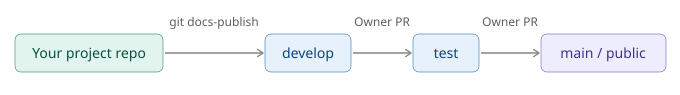
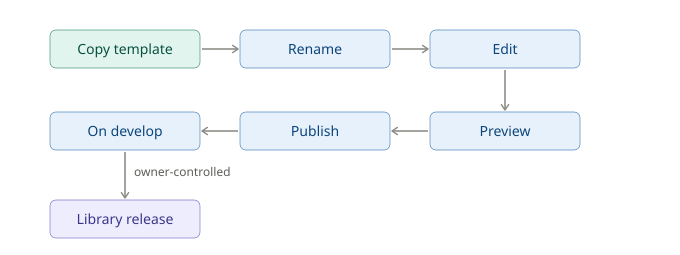

Editor Guide
Copernicus Land Monitoring Service - Technical Library
Quarto documentation, Markdown authoring, CLMS Technical Library, Git subtree integration, Document publishing workflow, Version control strategy, RStudio editing environment, Algorithm Theoretical Basis Document, Product User Manual, YAML header configuration, Document rendering, Technical documentation guidelines
Contact:
European Environment Agency (EEA)
Kongens Nytorv 6
1050 Copenhagen K
Denmark
https://land.copernicus.eu/
This guide assumes your project is already integrated with the Technical Library - the DOCS/ subtree is in place and the Git aliases are configured. If that setup isn’t done yet, see the Setup Guide first.
1 How This Works
1.1 Your project and the central library
Your project repository contains a DOCS/ folder that is both part of your project and part of the central CLMS Technical Library. The connection works as a git subtree: your documents live in your repo, but git docs-publish merges them into the library’s develop branch.
That means you own the source. You edit locally, commit to your project, and publish when ready. The library pulls in documents from all projects.
1.2 The publish flow
Publishing to develop is not a public release. The public-facing library only changes when a Technical Library owner promotes changes from develop to test to main. As an editor, your work stops at develop.

1.3 The document lifecycle

Major version bumps are your decision - you create a new file with a bumped _v<N> suffix. Minor and patch versions are AI-assigned at release time based on the scope of changes.
2 Starting a New Document
2.1 From a template (recommended)
Pick the template that matches your document type:
CLMS_Template_ATBD.qmd- Algorithm Theoretical Basis Document, for the scientific and technical foundations of a data productCLMS_Template_PUM.qmd- Product User Manual, for how users access and interpret a product
Once you’ve chosen:
Copy the template into
DOCS/(not sure what that looks like? See Folder and File Structure)Rename it using this pattern:
CLMS_<Product-Name>_<Document-Type>_v<Major-Version>.qmdFor example:
CLMS_HRL-Forest_PUM_v1.qmdUse hyphens within the product name, not underscores. Start every new document at
_v1. The document type is eitherATBDorPUM.Create a matching
-media/folder for images:CLMS_HRL-Forest_PUM_v1-media/Edit in place, following the structure the template provides
The templates include a pre-filled YAML header, required sections, and commented guidance throughout. Try to keep the structure intact - it makes a real difference to how consistently documents behave across the library.
2.2 From scratch
If neither template fits, create a new .qmd file directly in DOCS/, following the same naming pattern, create a matching -media/ folder, and add the required YAML header manually (see The YAML Header).
Templates save time even when they don’t feel like an exact fit - the YAML header and section structure are the main things you’d otherwise need to set up manually.
Migrating an existing .docx? See the Migration Guide [TBD link].
3 The YAML Header
If you copied a template, the header is pre-filled - just update title, subtitle, date, and product-name.
3.1 Required fields
---
title: "HRL Forest"
subtitle: "High Resolution Layer - Forest Type"
date: "2026-01-27"
product-name: "HRL Forest"
---title- short product name, appears as the document titlesubtitle- full product name or document type descriptiondate- publication or last-updated date in ISO formatproduct-name- used internally for metadata and indexing
3.2 Optional fields
template-version- records which template version was used as the starting point. Set automatically when copying a template; don’t edit it manually.
3.3 System-managed fields
Leave these out of your YAML header entirely - the publishing system handles them:
keywords- AI-generated at publish time based on document content. Anything you add gets overwritten.version- carried by the filename suffix, not the YAML. No version field belongs in the header.
4 Writing Content
Markdown basics - headings, lists, links, images, tables, equations, footnotes, diagrams - are covered in the Quarto Markdown guide. This chapter covers only what’s specific to this system.
4.1 Image folder convention
Images go in <your-document-name>-media/, referenced with relative paths:
4.2 Page breaks
Use the Quarto shortcode to insert a page break in PDF output:
{{< pagebreak >}}Note that --- renders as a horizontal rule, not a page break.
4.3 Complex table layouts
For tables with merged cells, nested content, or custom styling, use HTML tables directly in your .qmd file. Both the HTML output and Typst-rendered PDF handle them well.
Standard Markdown tables have limited formatting options. HTML tables let you control exactly how things look - column widths, cell colours, text alignment, borders - using inline CSS:
```{=html}
<table style="width: 100%; border-collapse: collapse;">
<thead>
<tr style="background-color: #2c3e50; color: white;">
<th colspan="2" style="padding: 10px; text-align: center;">Product Overview</th>
</tr>
</thead>
<tbody>
<tr>
<td style="padding: 8px; border: 1px solid #ccc; font-weight: bold;">HRL Forest</td>
<td style="padding: 8px; border: 1px solid #ccc;">Active</td>
</tr>
<tr style="background-color: #f2f2f2;">
<td style="padding: 8px; border: 1px solid #ccc; font-weight: bold;">Water Bodies</td>
<td style="padding: 8px; border: 1px solid #ccc;">Active</td>
</tr>
</tbody>
</table>
```5 Editing and Previewing Locally
5.1 Open the project in RStudio
- Open RStudio
- File > Open Project… and select the root folder of your project
- Navigate to
DOCS/and open the.qmdfile you want to edit
5.2 Preview your document
Click the Render button at the top of the editor pane to render HTML or PDF:
![A screenshot of a software interface toolbar, likely from RStudio, for editing a file named `hello.qmd`. The toolbar contains various options including navigation arrows, a save icon, and a checkbox labelled 'Render on Save'. The central part of the toolbar features a 'Render' button, visually highlighted with a purple outline, depicted with an icon of two blue arrows pointing right. To the right of the 'Render' button are a gear icon (settings) and a dropdown arrow. Further right, a 'Run' button with a green arrow is visible, along with a refresh/loop icon. Below the main toolbar, two tabs are visible: 'Source' and 'Visual', with 'Visual' currently selected. Additional text formatting and editing options are also present, such as bold, italic, code, 'Normal' dropdown, list icons, image insertion icon, 'Format' dropdown, 'Insert' dropdown, 'Table' dropdown, and an 'Outline' option.](guidelines_editor-manual_v1-media/rstudio-render.png)
Or enable Preview on Save in the toolbar to re-render on every save:
![A screenshot of the RStudio integrated development environment's toolbar when editing a Quarto (.qmd) file. The document tab displays 'hello.qmd'. The main toolbar shows various icons including navigation arrows, a save icon, and a checkbox labeled 'Render on Save', which is highlighted by a purple oval. Following 'Render on Save', there are icons for spelling/grammar check (ABC with green checkmark), search (magnifying glass), and a 'Render' button (blue arrow icon). To the right are a settings gear icon, a dropdown arrow, an 'Insert Chunk' icon (green C), an upload/download arrow pair, a 'Run' button with a green arrow, and a refresh/sync icon. Below this, there are two tabs for editing modes: 'Source' and 'Visual' (currently active). Further below is a standard text formatting toolbar with options for bold, italic, code, text style (Normal), list types, image insertion, and dropdowns for Format, Insert, Table, and Outline.](guidelines_editor-manual_v1-media/rstudio-render-on-save.png)
The rendered output appears in the Viewer tab in the lower-right pane:
![A screenshot of the RStudio Integrated Development Environment (IDE) menu bar and toolbar, showing options relevant to documentation rendering. The menu bar displays the following tabs: 'Files', 'Plots', 'Packages', 'Help', 'Viewer', and 'Presentation'. The 'Viewer' tab is prominently highlighted by a thick purple oval outline. Below the menu bar, the toolbar includes navigation arrows (left, right), an icon with a red 'X' (likely close or stop), a blank document icon, an 'Edit' button accompanied by a pencil icon, and a 'Sync Editor' checkbox. On the right side of the toolbar, a 'Publish' button with a blue circular arrows icon is visible, along with a dropdown arrow and a refresh icon. In the top right corner, there are two window management icons.](guidelines_editor-manual_v1-media/rstudio-render-viewer-tab.png)
If the Viewer tab isn’t showing rendered output, go to Tools > Global Options > R Markdown and set Show output preview in to Viewer Pane:
![This image is a screenshot of the 'Options' dialog within the RStudio Integrated Development Environment (IDE), displaying settings for R Markdown. On the left navigation panel, 'R Markdown' is selected. The main pane has four tabs: 'Basic' (currently active), 'Advanced', 'Visual', and 'Citations'. Under the 'Basic' tab for 'R Markdown' settings, the following options are visible: 'Show document outline by default' (unchecked), 'Soft-wrap R Markdown files' (checked), and 'Show in document outline:' (dropdown set to 'Sections Only'). A key setting, 'Show output preview in:', is highlighted with a purple border, and its dropdown is set to 'Viewer Pane'. Below this, 'Show output inline for all R Markdown documents' is checked, 'Show equation and image previews:' is set to 'Inline', and 'Evaluate chunks in directory:' is set to 'Document'.](guidelines_editor-manual_v1-media/rstudio-render-viewer-options.png)
5.3 Render the full project
To render all documents and preview the complete library locally:
git docs-previewThe repository ships with the project config renamed to _quarto-not-used.yaml so RStudio operates in single-file mode by default - faster for day-to-day editing. When you need to render the full project, rename it to _quarto.yaml, run quarto render, then rename it back.
6 Publishing to Develop
git add DOCS/
git commit -m "docs: update [brief description]"
git docs-publishAfter the pipeline runs, check your document at: https://eea.github.io/CLMS_documents/develop/index.html
Navigation, cross-links, and the sidebar TOC can behave differently than in your local RStudio preview - worth a quick look before calling it done.
7 Folder and File Structure
DOCS/
├── _meta/ # Scripts, config, metadata - do not edit
├── includes/ # Quarto include files - do not edit
├── templates/ # Document templates - do not edit
├── theme/ # Styling definitions - do not edit
├── _quarto.yml # Project-wide Quarto config
├── CLMS_HRL-Forest_PUM_v2.qmd
├── CLMS_HRL-Forest_PUM_v2-media/
├── CLMS_Water-Bodies_ATBD_v1.qmd
├── CLMS_Water-Bodies_ATBD_v1-media/
└── ...Your work lives in DOCS/ directly: one .qmd file per document, plus a matching -media/ folder for images and diagrams. The four managed subdirectories (_meta/, includes/, templates/, theme/) are updated centrally - don’t edit them.
8 File Naming and Versioning
8.1 The version suffix
The _v<N> suffix in the filename is the major version - the only version number you control. Minor and patch versions are assigned automatically by AI at library release time based on the scope of changes: small corrections get a patch bump (2.3.5 → 2.3.6), new or revised sections get a minor bump (2.3.0 → 2.4.0). A new file CLMS_HRL-Forest_PUM_v3.qmd starts at 3.0.0 at its first release. You never set a version number in YAML.
8.2 When to create a new major version
Edit the existing file for most changes. Create a new major version only when you need to:
- rewrite most of the content
- make breaking structural changes
- keep the previous version available as a stable reference
cp DOCS/CLMS_HRL-Forest_PUM_v2.qmd DOCS/CLMS_HRL-Forest_PUM_v3.qmd
cp -r DOCS/CLMS_HRL-Forest_PUM_v2-media DOCS/CLMS_HRL-Forest_PUM_v3-mediaBoth versions stay in the library and evolve independently from that point on.
8.3 Don’t rename after publishing
The filename becomes part of the document’s URL. Renaming breaks links and cross-references. If a significant revision is needed, create a new major version rather than renaming.
9 Restoring Previous Versions
Restore pulls a published version of a document into your local working copy. It doesn’t roll back the library - think of it as “pick up from version X,” not “undo to version X.”
9.1 Commands
git docs-restore --list-all # all published documents
git docs-restore --list DOCS/CLMS_HRL-Forest_PUM_v2.qmd # versions of one file
git docs-restore DOCS/CLMS_HRL-Forest_PUM_v2.qmd 2.0.0 # specific version
git docs-restore --latest DOCS/CLMS_HRL-Forest_PUM_v2.qmd # latest published version9.2 When to use it
Recover deleted content. You removed a section locally and need it back. Restore the last published version, copy out what you need, then carry on with your current version.
Something went wrong in a recent edit. Restore an earlier version (e.g. 2.1.0) and work forward from there rather than trying to untangle the current state.
Resurrect a deleted file. If a file was removed from the project but still exists in the library history, --list-all will find it. Restore brings it back into DOCS/ as if nothing happened.
10 Release Path
Once you publish to develop, the rest of the process belongs to Technical Library owners. Getting from develop to public requires two separate pull requests, each reviewed and approved by a second owner before it merges.
| Stage | URL |
|---|---|
| develop | https://eea.github.io/CLMS_documents/develop/index.html |
| test | https://eea.github.io/CLMS_documents/test/index.html |
| main (public) | https://library.land.copernicus.eu |
At each release, the system assigns version numbers automatically based on what changed.
11 Change Log
| Date | Version | Summary |
|---|---|---|
| 2025-12-03 | 1.0.0 | Initial release |